IP sits at Layer 3 — but what exactly does it provide that Layer 2 can't? Think about what happens when a packet needs to cross multiple networks to reach its destination. What role does IP play in making that possible, and why does it not guarantee delivery?
Identify the Purpose of IP
IP (Internet Protocol) provides logical addressing and routing to move data across multiple networks. IP is defined in RFC 791 (IPv4) and RFC 2460 (IPv6). The IP header is added by Layer 3 routers and contains source and destination IP addresses that remain constant across the entire path.
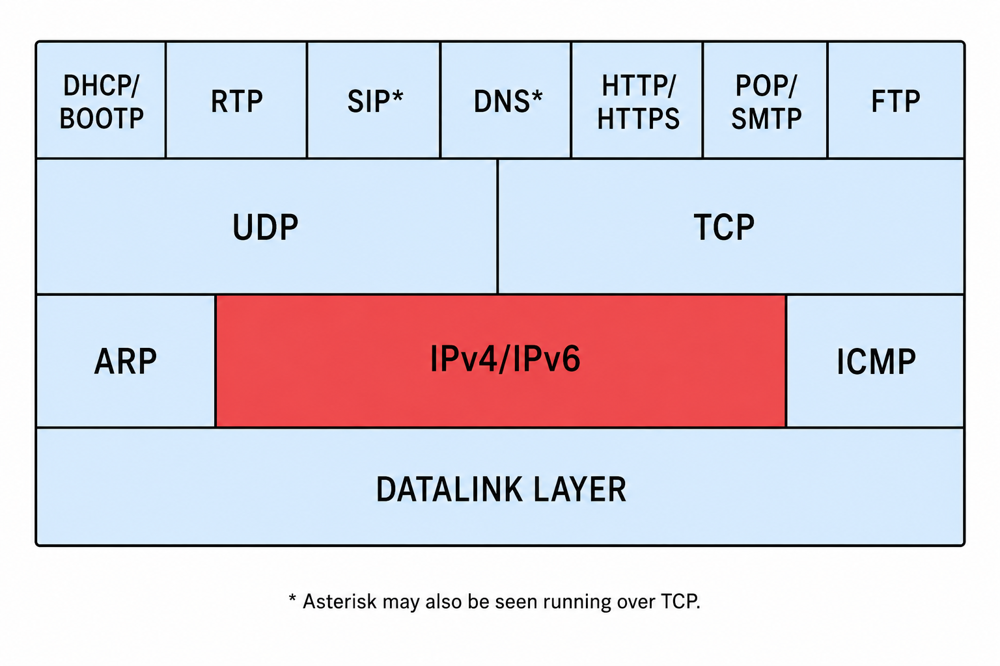
IP is a connectionless, best-effort protocol. This means:
- No connection is established before data is sent
- IP does not guarantee delivery — packets may be lost, duplicated, or delivered out of order
- No acknowledgment mechanism exists at the IP layer
- Higher-layer protocols (TCP) provide reliability when needed
IP provides two key services: addressing (identifying source and destination hosts globally) and routing (determining the path packets take across networks). Each router along the path decrements the TTL and makes a forwarding decision based on the destination IP address.
IP is stateless by design. Each packet is independent — routers make forwarding decisions based solely on the destination address in that packet. This makes the internet highly resilient: if a router fails, packets are rerouted automatically. The trade-off is that IP itself provides no reliability guarantees.
When you see 'normal' IPv4 traffic in Wireshark, what patterns should you expect? Think about how packet sizes vary, what TTL values typically look like, and what the Info column tells you. How does knowing the 'normal' baseline help you spot problems?
Analyze Normal IPv4 Traffic
Normal IPv4 communications show predictable patterns in the packet header fields. When analyzing IPv4 traffic, examine these baseline characteristics:
Normal IPv4 Traffic Characteristics
- Consistent TTL values — Windows hosts typically start with TTL=128; Linux/macOS with TTL=64. A packet that has traversed 3 hops from a Windows host will show TTL=125.
- Incrementing IP ID field — The IP Identification field increments for each packet sent from a host, allowing you to identify retransmissions and track packet order
- No fragmentation — Most modern networks use Path MTU Discovery (PMTUD) to avoid fragmentation. Ethernet networks typically have an MTU of 1500 bytes.
- Valid checksums — IP header checksums should be valid unless checksum offloading is enabled on the capturing host
- Appropriate protocol numbers — The Protocol field indicates the next-layer protocol (6=TCP, 17=UDP, 1=ICMP, 58=ICMPv6)
If you see many bad IP checksums when capturing on the local machine, this is almost certainly due to checksum offloading — not a real problem. The NIC computes the checksum before transmission, but Wireshark captures the packet before this step. Disable offloading or ignore these errors when capturing locally.
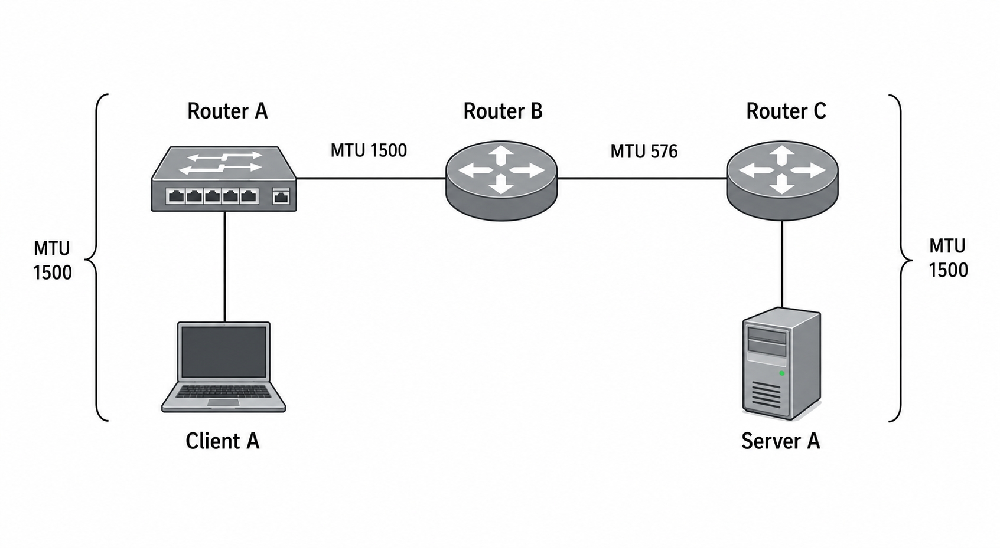
IP Identification Field
The IP ID field is set by the sending host and increments with each datagram sent. This field is used to reassemble fragmented datagrams. You can track a host's packet output by watching the IP ID values. A sudden jump in IP ID values may indicate lost packets between the two captured packets.
If you see IP ID values that jump by large amounts (e.g., 1234, 1235, 1240), packets 1236-1239 were lost between capture points. Add the IP ID field as a column in Wireshark to easily spot these gaps.
What are the most common IPv4-layer problems you'd see in Wireshark? Consider: if a host sends a packet with TTL=1 and hits a router, what happens? What about fragmentation — when is it necessary and when does it cause performance issues?
Analyze IPv4 Problems
TTL-Related Problems
When a router receives a packet with TTL=1, it decrements the TTL to 0 and discards the packet, sending back an ICMP Time Exceeded (Type 11) message to the source. This is actually the mechanism traceroute uses to map the path to a destination.
If you see a packet with a very low TTL that never seems to get where it's going, suspect a routing loop. The packet is being forwarded between two routers that both think the other is the correct next hop. The TTL field prevents infinite loops — eventually the packet is dropped and an ICMP Time Exceeded is sent.
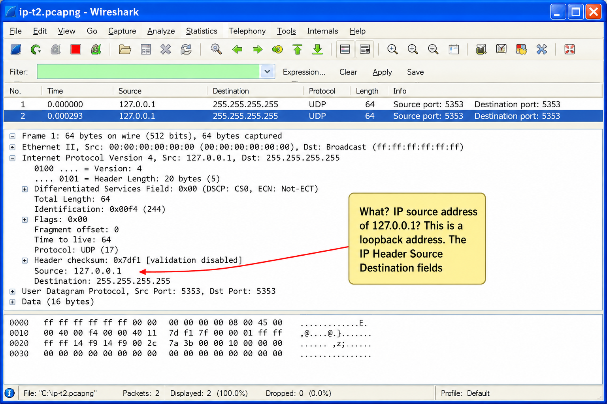
IP Fragmentation
IP fragmentation occurs when a packet exceeds the MTU of a network link and the DF (Don't Fragment) bit is not set. The router breaks the packet into smaller fragments, each with the same IP ID but different Fragment Offset values.
Fragmentation is expensive because:
- Each fragment must be reassembled at the destination
- If one fragment is lost, all fragments must be retransmitted (TCP handles this)
- Reassembly consumes CPU and memory at the destination
- Some firewalls block fragmented packets
Modern TCP stacks set the Don't Fragment (DF) bit and use Path MTU Discovery (PMTUD) to find the smallest MTU along the path. If a router can't forward the packet due to MTU constraints, it sends back ICMP Type 3, Code 4 (Fragmentation Needed, Don't Fragment Set). If this ICMP is blocked by a firewall, PMTUD fails and connections stall — a common problem in enterprise networks.
Checksum Errors
IP checksum errors in Wireshark usually indicate one of two things:
- Checksum offloading — the NIC computes checksums after Wireshark captures the packet. This is very common and not a real problem.
- Packet corruption — actual bit errors in the packet. This is rare on modern networks but can occur on wireless links or faulty hardware.
The IPv4 header has 13+ fields. Which ones are most critical for network analysis, and why? When you see a packet with DSCP markings, what does that tell you? How does the Protocol field help you filter traffic without knowing port numbers?
Dissect the IPv4 Packet Structure
The IPv4 header is variable length (minimum 20 bytes) due to the optional Options field. Understanding each field helps you analyze traffic and create precise filters.

IPv4 Header Fields
Version Field
The Version field is set to 4 for IPv4 and 6 for IPv6. If you see a packet with an unexpected version number, it may indicate a tunneling protocol or malformed packet.
IP Header Length (IHL)
IHL indicates the length of the IP header in 32-bit words. A value of 5 means a 20-byte header (no options). Values above 5 indicate IP Options are present. The IHL is needed because the Options field is variable length.
DSCP / Type of Service (ToS)
The DSCP (Differentiated Services Code Point) field is the first 6 bits of the original ToS byte. DSCP markings are used for Quality of Service (QoS) — they tell routers how to prioritize traffic. Common DSCP values:
- 0 (Default) — Best effort traffic (most web traffic)
- 46 (EF — Expedited Forwarding) — VoIP RTP traffic (low latency, low jitter)
- 34 (AF41) — Video conferencing
- 24 (CS3) — Call signaling (SIP)
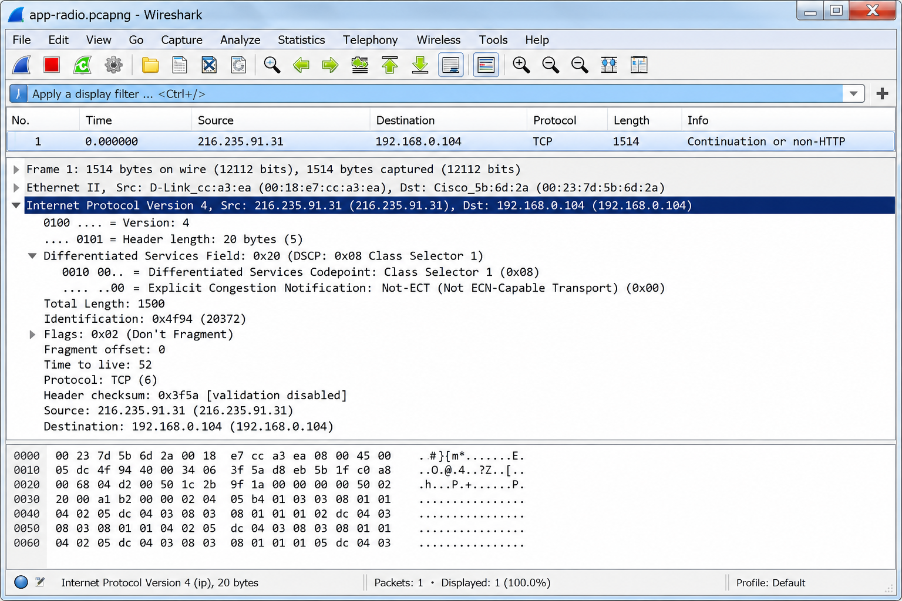
Total Length Field
The Total Length field indicates the entire size of the IP packet (header + data) in bytes. The maximum is 65,535 bytes. On Ethernet, maximum payload is 1500 bytes. If Total Length exceeds 1500, the packet has been fragmented or jumbo frames are in use.
Identification Field
The IP ID is set by the source host and uniquely identifies a datagram. All fragments of a datagram share the same IP ID. The IP ID typically increments by 1 for each datagram sent, though some operating systems randomize it for security.
Flags Field
- Reserved bit — must be 0 (was "Evil Bit" RFC 3514 — an April Fool's joke)
- DF (Don't Fragment) — if set, routers must not fragment this packet; if it's too large for the next hop, send ICMP Fragmentation Needed
- MF (More Fragments) — if set, more fragments follow; last fragment has MF=0
Fragment Offset Field
Indicates where in the original datagram this fragment belongs, in 8-byte units. Fragment Offset of 0 = first fragment. To reconstruct the original datagram: multiply offset by 8 to get the byte position.
Time to Live (TTL)
TTL is decremented by 1 at each router hop. When TTL reaches 0, the router discards the packet and sends ICMP Time Exceeded. Default TTL values: Windows=128, Linux/macOS=64, Cisco routers=255. Comparing observed TTL against expected defaults tells you how many hops a packet has traversed.
Protocol Field
Identifies the Layer 4 protocol carried in the IP payload. Key protocol numbers:
- 1 = ICMP | 6 = TCP | 17 = UDP | 41 = IPv6 (6in4 tunnel) | 47 = GRE | 50 = ESP (IPsec) | 89 = OSPF
Header Checksum
Covers only the IP header (not the data). Recomputed at each router since TTL changes. Wireshark may show checksum errors on the capturing host due to offloading.

IP addresses stay constant throughout the entire path (unless NAT is involved). MAC addresses change at each hop — the router replaces source and destination MAC at every hop. This is why you can't use MAC addresses to track traffic beyond the local subnet.
IPv6 was designed to fix IPv4's limitations — but it also made deliberate architectural choices that differ from IPv4. Why does IPv6 eliminate the checksum? Why was fragmentation moved to an extension header? What problems does the massive address space actually solve beyond just having more addresses?
Introduction to IPv6
IPv6 was developed to address the exhaustion of IPv4 addresses and to improve on IPv4's design. IPv6 is defined in RFC 2460 and uses 128-bit addresses instead of IPv4's 32-bit addresses.
IPv4 can support approximately 4.3 billion unique addresses (2³²). IANA allocated the last /8 IPv4 blocks in 2011. IPv6 supports 340 undecillion addresses (3.4 × 10³⁸) — enough to assign trillions of addresses to every person on Earth. IPv6 deployment accelerated significantly after 2012.

Key IPv6 Improvements Over IPv4
- No header checksum — eliminated to speed up router processing (Layer 2 and TCP/UDP already provide error detection)
- No fragmentation by routers — only source hosts fragment; routers that receive too-large packets send ICMPv6 Packet Too Big (Type 2)
- Fixed 40-byte base header — faster router processing; options moved to extension headers
- Flow Label field — enables routers to identify packets belonging to the same flow without examining upper-layer headers
- Built-in IPsec support — IPv6 mandates IPsec capability (though not required to use it)
- Auto-configuration (SLAAC) — hosts can configure their own IPv6 addresses without DHCP
- No broadcasts — replaced by multicast; reduces network-wide traffic

IPv6 replaces ARP with Neighbor Discovery Protocol (NDP), which uses ICMPv6 messages: Router Solicitation (Type 133), Router Advertisement (Type 134), Neighbor Solicitation (Type 135), and Neighbor Advertisement (Type 136). NDP also handles duplicate address detection (DAD) and path MTU discovery.
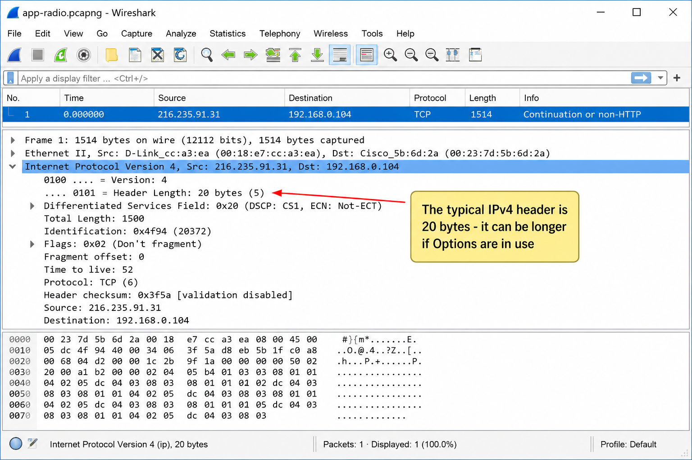
The IPv6 base header is fixed at 40 bytes — compare this to IPv4's variable-length header. The Next Header field in IPv6 serves a dual purpose. What is it? How does the chain of extension headers work, and why does this design provide more flexibility than IPv4 options?
Dissect the IPv6 Packet Structure
The IPv6 base header is always exactly 40 bytes — much simpler than the variable-length IPv4 header.
IPv6 Base Header Fields
- Version (4 bits) — set to 6
- Traffic Class (8 bits) — equivalent to IPv4 DSCP/ToS; used for QoS
- Flow Label (20 bits) — identifies packets belonging to the same flow; enables routers to apply consistent forwarding without per-packet decision-making
- Payload Length (16 bits) — length of everything after the 40-byte IPv6 header (extension headers + data)
- Next Header (8 bits) — identifies the next header type (extension header or Layer 4 protocol)
- Hop Limit (8 bits) — equivalent to IPv4 TTL; decremented by each router
- Source Address (128 bits / 16 bytes)
- Destination Address (128 bits / 16 bytes)
Next Header field values: 0=Hop-by-Hop Options, 6=TCP, 17=UDP, 43=Routing Header, 44=Fragment Header, 50=ESP (IPsec), 51=AH (IPsec), 58=ICMPv6, 59=No Next Header, 60=Destination Options. The value 58 (ICMPv6) is particularly important — ICMPv6 handles NDP, MLD, and error reporting all in one protocol.
IPv6 uses 128-bit addresses written in hexadecimal — but there are rules for shortening them. More importantly, IPv6 has several address types that serve different purposes. What is the difference between a link-local address and a global unicast address? When would you filter for one vs the other in Wireshark?
Basic IPv6 Addressing
IPv6 Address Notation
IPv6 addresses are 128 bits written as 8 groups of 4 hexadecimal digits separated by colons:
2001:0db8:85a3:0000:0000:8a2e:0370:7334
Two shortening rules:
- Leading zeros in each group can be omitted:
0db8→db8 - One consecutive sequence of all-zero groups can be replaced with
:::2001:db8::8a2e:370:7334
The :: shorthand can only be used ONCE in an IPv6 address. If used twice, the address is ambiguous. The loopback address 0:0:0:0:0:0:0:1 becomes ::1. The all-zeros address becomes just ::.
IPv6 Address Types
- Global Unicast (2000::/3) — globally routable, equivalent to public IPv4 addresses. Most begin with 2001: or 2002:
- Link-Local (fe80::/10) — valid only on the local network segment, not routed. Auto-generated by every IPv6 interface. Used for NDP, router discovery, and DHCPv6.
- Unique Local (fc00::/7) — private address space, similar to RFC 1918 IPv4 (10.x, 192.168.x). Not globally routed.
- Multicast (ff00::/8) — one-to-many; replaces broadcasts. ff02::1 = all nodes, ff02::2 = all routers, ff02::1:ff00:0/104 = solicited-node multicast
- Loopback (::1) — equivalent to IPv4 127.0.0.1
- Unspecified (::) — no address assigned yet (used during boot/DHCPv6 discover)
IPv6 hosts can auto-generate their own global addresses using SLAAC (RFC 4862). The host takes its 64-bit network prefix from the Router Advertisement and combines it with a 64-bit interface identifier (derived from the MAC address using EUI-64, or randomly generated for privacy). No DHCP server required!
Networks can't switch from IPv4 to IPv6 overnight. Transition mechanisms like 6to4, Teredo, and ISATAP allow IPv6 traffic to traverse IPv4 networks. What is the fundamental difference between 6to4 and Teredo? When would one fail but the other succeed?
IPv6 Transition Mechanisms
During the transition from IPv4 to IPv6, several tunneling mechanisms allow IPv6 traffic to traverse IPv4-only networks. These mechanisms encapsulate IPv6 packets inside IPv4 packets.
6to4 Tunneling
6to4 (RFC 3056) automatically encapsulates IPv6 packets within IPv4 packets using Protocol number 41. Key characteristics:
- 6to4 addresses begin with
2002::/16 - The next 32 bits of the address contain the host's public IPv4 address in hex
- Requires a public IPv4 address — does not work behind NAT
- Uses IPv4 Protocol 41 (no UDP overhead)
- 6to4 relay routers connect 6to4 hosts to native IPv6 networks

Teredo
Teredo (RFC 4380) encapsulates IPv6 packets within UDP to traverse NAT devices. Key characteristics:
- Teredo addresses begin with
2001:0000::/32 - Uses UDP port 3544
- Works behind NAT (unlike 6to4) because NAT handles UDP naturally
- Requires a Teredo server to coordinate the mapping
- Teredo relay servers connect Teredo clients to native IPv6 networks
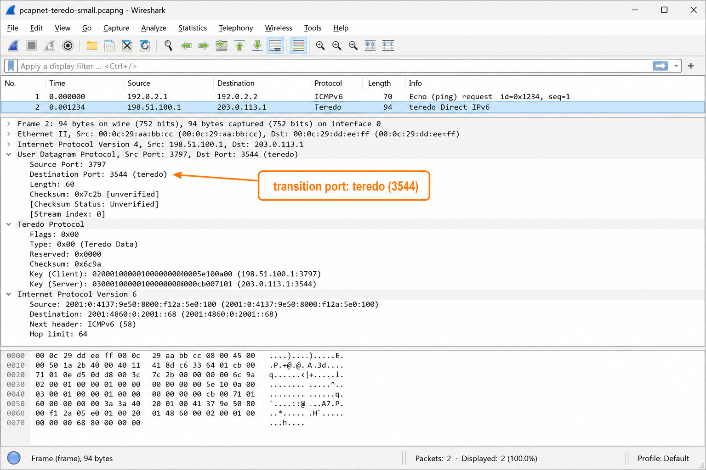
ISATAP (Intra-Site Automatic Tunnel Addressing Protocol)
ISATAP (RFC 5214) creates virtual IPv6 links over IPv4 networks within an organization. Unlike 6to4 and Teredo which target internet connectivity, ISATAP is designed for internal enterprise use:
- ISATAP addresses embed the IPv4 address as
::0:5efe:x.x.x.xfor private IPv4 or::200:5efe:x.x.x.xfor public IPv4 - Works with both public and private (NAT) IPv4 addresses
- An ISATAP router provides the connection between ISATAP hosts and native IPv6
- Commonly used on Windows networks for internal IPv6 deployment
6to4: Look for IPv4 packets with Protocol=41. The payload is an IPv6 packet. Filter: ip.proto==41
Teredo: Look for UDP port 3544. Filter: udp.port==3544
ISATAP: Look for IPv6 addresses containing 0:5efe: or 200:5efe:. Filter: ipv6.addr contains "5efe"
When sharing a trace file for troubleshooting, you might want to hide real IP addresses for privacy. How does Wireshark help with this? Separately — if traffic is encrypted, what IP-layer information is still visible even though the payload is hidden? What can you still analyze?
Sanitize IP Addresses & Analyze Encrypted Traffic
Sanitize IP Addresses
Before sharing a trace file externally (for vendor support, community help, or documentation), you should remove or obfuscate sensitive IP addresses. Wireshark provides tools for this:
- Use EditCap with
-sto truncate packet payloads - Use the SanitizeTrace tool to replace IP addresses with substitutes
- Use Wireshark's Edit | Preferences | IP addresses to mask addresses in the display

IPv4 Protocol Preferences
Wireshark's IPv4 protocol preferences (Edit → Preferences → Protocols → IPv4) allow you to configure:
- Validate the IPv4 checksum if possible — disable to suppress false checksum errors from checksum offloading
- Reassemble fragmented IPv4 datagrams — allows Wireshark to reconstruct fragmented packets for analysis
- IP geolocation — if a GeoIP database is configured, map IP addresses to geographic locations
- Subdissector reassembly — allow higher-layer protocols to request IP reassembly
Troubleshoot Encrypted Communications
Even when traffic is encrypted (TLS, IPsec), significant information remains visible at the IP layer:
- IP addresses — source and destination are always visible (unless using a VPN)
- Protocol numbers — reveals if IPsec (ESP=50, AH=51) is in use
- Packet sizes and timing — can reveal application behavior patterns
- TCP handshake details — visible even for TLS connections (window sizes, MSS, SACK support)
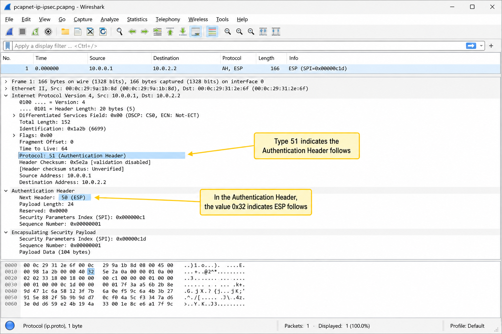
With encrypted traffic you can still: (1) identify the communicating endpoints by IP, (2) identify the transport protocol (TCP/UDP), (3) check for TCP problems (retransmissions, window issues), (4) measure response times (time between SYN and SYN/ACK), (5) identify IPsec tunnels by Protocol 50/51. You cannot read the application payload or HTTP headers.
Filter on IPv4/IPv6 Traffic — Case Studies
IPv4 and IPv6 Display Filters
The capture filter syntax for IPv4 is ip; for IPv6 it is ip6. Display filters are ip and ipv6 respectively.
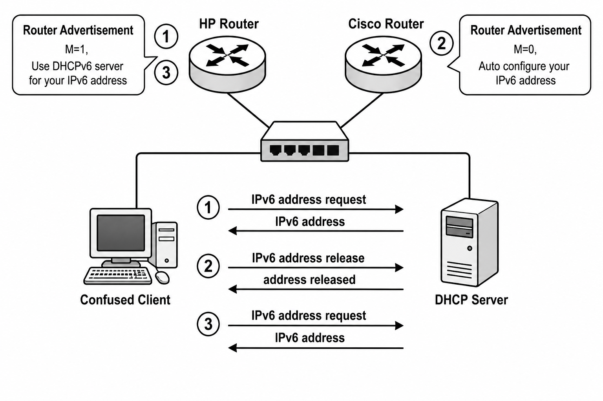
ip.flags.df == 1 — Don't Fragment bit set
ip.flags.mf == 1 — More Fragments (fragmentation in progress)
ip.frag_offset > 0 — non-first fragments
ip.checksum_bad == 1 — bad IPv4 checksum
ip.proto == 41 — 6to4 tunneled IPv6-in-IPv4
ip.proto == 50 — ESP (IPsec encrypted)
ipv6.nxt == 58 — ICMPv6
ipv6.dst == ff02::1 — all-nodes multicast
ipv6.src matches "^fe80" — link-local source
Because IP addresses remain constant across the entire path (unlike MAC addresses), you can correlate captures taken at different points in the network by IP address. This makes it easy to determine whether a problem is occurring before or after a specific network device.
Case Study 1: Everyone Blamed the Router
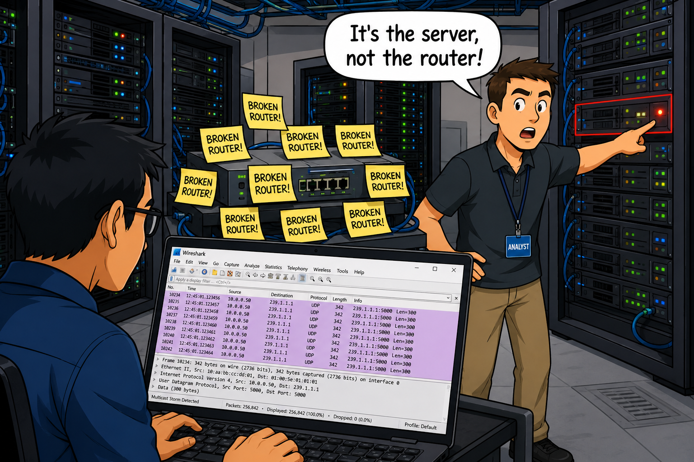
One day we received a report of a router problem. It would periodically not respond to pings.
A colleague suggested we start by replacing the router's Ethernet NIC. Before doing that, I suggested we connect Wireshark to the same VLAN and get a network trace using no mirroring — we expected to see a broadcast storm.
The trace showed an IP multicast storm occurring at the same time the router stopped responding. We could see the IP address of one of the servers in the multicast packets.
We located the server and disconnected it from the network, resolving the router issue. Further investigation revealed a misconfiguration on the server, which was easily corrected.
Without Wireshark, we would have caused a major network outage while we replaced the router NIC and then probably the router — neither of which would have resolved the problem.
Case Study 2: It's Not the Network's Problem!
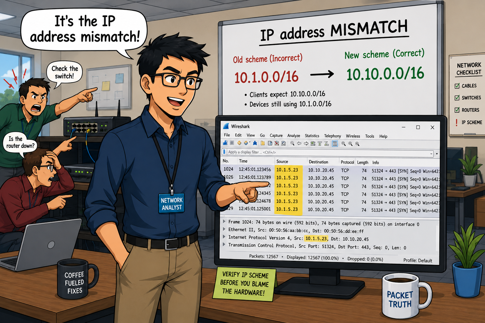
Our primary data information system was experiencing connection issues with external resources. The programming department spoke with their technical support, who pointed fingers at our DNS server.
I was still new to Wireshark but knew enough that I could perform some basic troubleshooting. I set a span on the switch port to the system (I didn't own a tap yet) and captured the packets.
I instantly saw the system was using an IP address from an old addressing scheme. For some reason, the system would periodically use that old IP address when sending packets.
I was able to inform technical support that they did not remove the old IP address configuration and that was why the system was having network related issues.
I really enjoyed the experience of being able to prove, once again, IT WAS NOT THE NETWORK!!
Case Study 3: IPv6 Addressing Mayhem
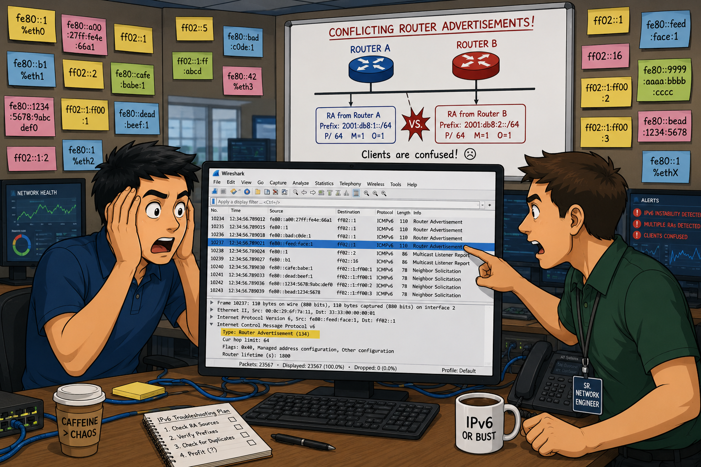
Recently I used Wireshark to detect a configuration error that was plaguing an IPv6 lab setup.
The lab has a common network where a Windows 2008-R2 server is located providing DHCP, DHCPv6 and DNS services. This is VLAN 1 and dual-stacked. There are also 2 routers: an HP router and a Cisco router, each connected to the common VLAN 1, and then each going out to their own separate networks (VLAN 1001 and 2001) supporting clients.
I have a Windows 7 client on VLAN 1 which is configured to use DHCP/DHCPv6. At first it was getting IPv4 and IPv6 addresses just fine, but then for some unexplained reason the client would simply release its IPv6 address and ask for an address again. The DHCPv6 server was sending it an IPv6 address, but the client wouldn't configure itself to use it. A bit later, the client would get an IPv6 address again, but a bit later the client would drop the address and ask again.
The mystery was solved by looking at the traffic with Wireshark! The ICMPv6 Router Advertisements were going out just fine. But wait — the RAs from the HP router have the M and O flags set to 1, but the RAs from the Cisco router sent RAs with M and O flags set off (0). The client was acting on conflicting RAs — sometimes told to use DHCPv6, sometimes told to use SLAAC.
The Cisco router needed to set the M and O flags to 1 just like the HP router. So, the moral of this story is ANY router on a network segment that is sending RAs needs to have the M and O bits set on if you want the clients to get their IPv6 address from a DHCPv6 server — otherwise mayhem and confusion will take over.
TL;DR — Chapter 17
IP provides connectionless, best-effort packet delivery across multiple networks using logical addressing and routing. IPv4 uses 32-bit addresses and a variable-length header; IPv6 uses 128-bit addresses and a fixed 40-byte header.
The TTL field (IPv4) and Hop Limit field (IPv6) limit packet lifetime — each router decrements by 1. When TTL reaches 0, the router sends ICMP Time Exceeded. The Protocol field identifies the Layer 4 protocol carried in the IP payload.
IPv6 improvements over IPv4 include: no header checksum, no router fragmentation, fixed header length, built-in flow labels, and multicast replacing broadcast. SLAAC allows hosts to auto-configure IPv6 addresses without DHCP.
Transition mechanisms bridge IPv4 and IPv6: 6to4 encapsulates IPv6 in IPv4 Protocol 41 (requires public IP); Teredo encapsulates in UDP port 3544 (works through NAT); ISATAP creates virtual IPv6 links over internal IPv4 networks.
IPv4 display filter: ip. IPv6 display filter: ipv6. Use ip.ttl, ip.proto, ip.flags, and ip.frag_offset to analyze specific packet characteristics.